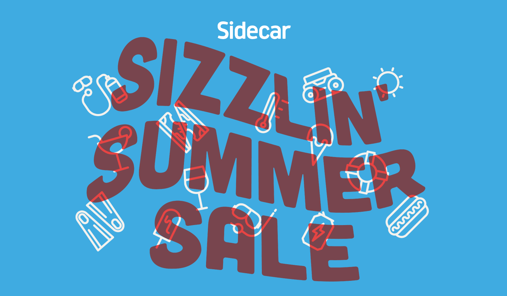
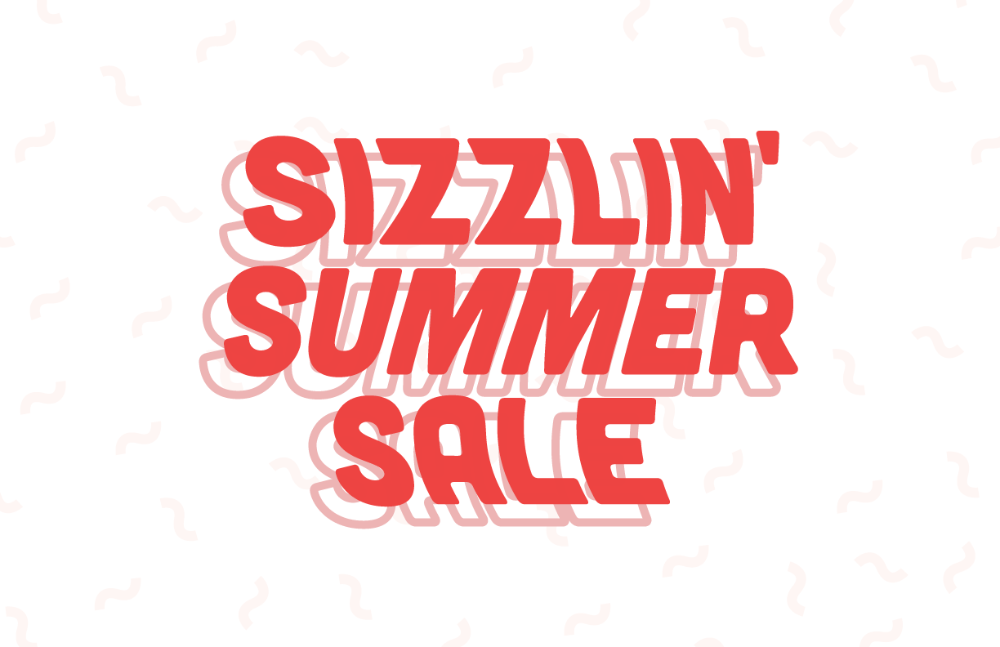
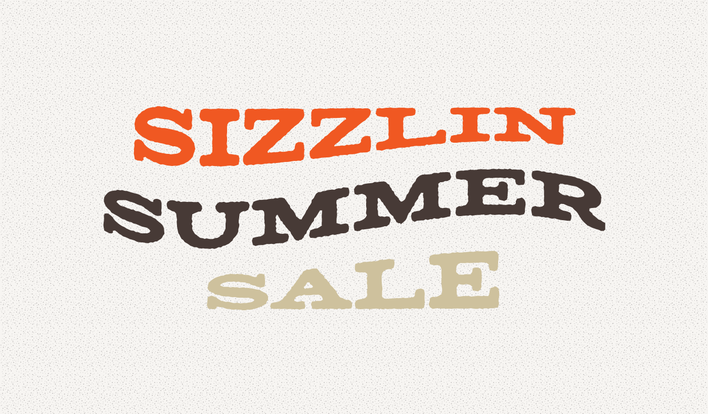

Created for a Sidecar promotional campaign in the summer of 2014, I tried to achieve summer vibes by mimicking the look of underwater type. Commonly seen from a diving board meters above the pool, I love the movement that the water's reflecting ripples gives the tiled type below.
Below are some explorations on direction and type that I played around with before landing on the final deliverable seen above.
My first instinct was to use blue since I was inspired by a swimming pool but it was too 'cool' and didn't have enough 'sizzle'
 This version was inspired by the tones and feel of matches. I loved how this came out but the lack of groovy vibes made me pass on it. The type is a modified version of Matchbook.